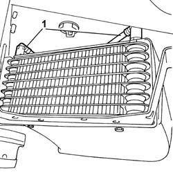
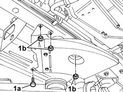
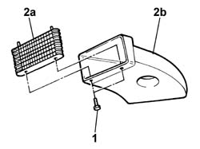

1040B62 FUEL COOLING DEVICE FOR TANK RETURN CIRCUIT - R.R.
- Path
- Procedures > 10 ENGINE > 1040 FUEL TANK AND PIPES > 1040B FUEL SUPPLY/RETURN CIRCUIT PIPE > 1040B62 FUEL COOLING DEVICE FOR TANK RETURN CIRCUIT - R.R.
- Kind
- repair procedure (removal / refitting; the operation number is the code)
- Applies to
- engines: 2.0 16V JTD, 2.2 16V JTD; all production periods
- Interactive page
- https://sloeber94.github.io/elrnDB-fUlss/en/#/179006991
Applies to: engines: 2.0 16V JTD; all production periods
 Removing
Removing
 Refitting
Refitting
Applies to: engines: 2.0 16V JTD; all production periods

Applies to: engines: 2.0 16V JTD; all production periods

Applies to: engines: 2.2 16V JTD; all production periods
Removing
Refitting1. Disconnect the rapid connectors for the intermediate and front return pipes from the fuel cooling device and release them from the retaining bands.
Applies to: engines: 2.2 16V JTD; all production periods
1. Undo the bolt (1a) and the nuts (1b) fixing the fuel cooling device and remove it.
Applies to: engines: 2.2 16V JTD; all production periods
1. Undo the retaining bolts.
2. Separate the duct (2a) and the radiator (2b).
Applies to: engines: 2.2 16V JTD; all production periods
Refitting
Removing- Fit the radiator on the duct and tighten the fixing bolts.
- Fit the cooling device and tighten the fixing nuts and bolt.
- Connect the rapid connectors for the two fuel pipes.